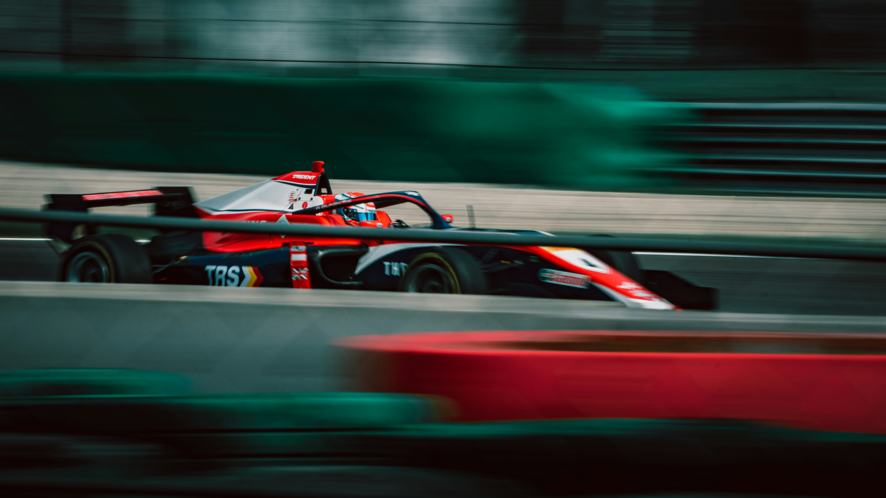
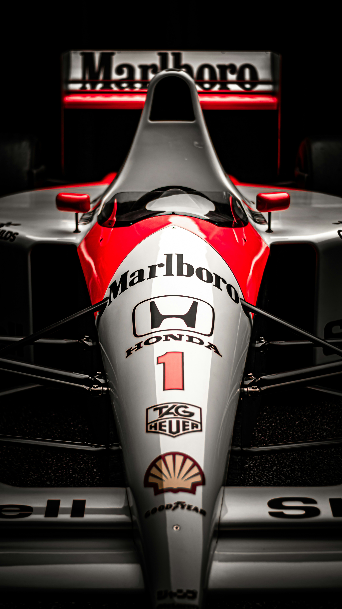

Bienvenido al mundo del motor
La Fórmula 1 es la competición automovilística internacional más prestigiosa y la categoría más alta de monoplazas de la FIA.

Fuente de la imagen: Unsplash (Fórmula 1) - Recurso utilizado con fines educativos (Proyecto BirtLH).
Características principales de la temporada
El campeonato actual destaca por su enorme despliegue tecnológico y la emoción en cada gran premio:
- Monoplazas híbridos de última tecnología y máxima eficiencia aerodinámica.
- Calendario global con circuitos urbanos y autódromos tradicionales por todo el mundo.
- Exigencia extrema tanto para los pilotos de élite como para los estrategas de las escuderías.

Fuente de la imagen: Unsplash (Fórmula 1) - Recurso utilizado con fines educativos (Proyecto BirtLH).
Enlaces de interés
Puedes consultar los calendarios oficiales, la clasificación de escuderías y toda la actualidad de última hora en la Página Oficial de la Fórmula 1.